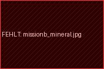
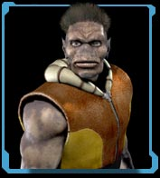

|
|
 |
| |
STORY
Caranthian Ore and Crystals were once common commodities. Now
they are the most rare, precious and priceless substances in
existence. They were the foundation of a fortune, the life blood
of an economy and a lifelong obsession.
As a youth, Zax had listened with interest in history class
about the year his society changed forever - the year that the
pioneer Oleus Caranth journeyed to a nearby planet.
There Caranth found a staggering concentration of minerals he
called Caranthian Ore and Crystals. He discovered that the unique
molecular structure of these minerals made them perfect for
use in Materials Generators - machines that converted raw materials
into other more useful objects.
|
|
 |
|
 |
|
 |
|
|
|
| |
Whereas most minerals could only produce
a few rudimentary objects, Caranthian Ore could be converted
into virtually anything imaginable. His discovery soon became
an integral part of daily life and made him a very wealthy man.
The Ore and Crystals were in such demand that Oleus' company,
Oleus Mining, soon strip-mined the nearby planet of all obtainable
ore.
|
|
|
|
|
|
 |
|
 |
|
|
|
| |
He had tasted poverty enough to know
that he hated it. He had never known wealth, but its allure
was all encompassing to him. So he worked long and hard to acquire
his very own space ship. The one he finally found was veteran
of other failed explorer missions. It was old, beat up, and
nothing to brag about - but it was for sale. He bought it, fixed
it up the best he could, and named it "Zelon" after
a famous actress from the "Good Old Days" who once
had a 'relationship' with Oleus Caranth.
Zelon's best feature was its commonplace, but very sophisticated,
onboard artificial intelligence. The AI was capable of thinking,
performing research, and had a rudimentary personality. Zax
reprogrammed its speaking voice to be that of the real life
Zelon, or "Babe", as Caranth had called his mistress.
Finally, when the onboard materials generator was repaired,
Zax set off to make his dream a reality. He knew there was
more Caranthian Ore out there somewhere, and he would find
it.
Ten long years later, he was about to set down on what he
thought was an uncharted and unclaimed planet in deep space.
|
|
|
|
|
|
 |
|